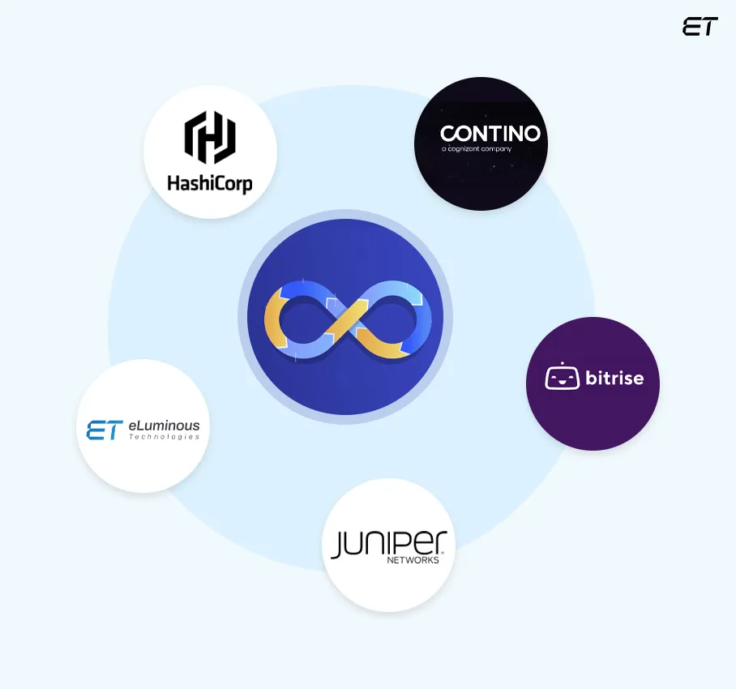

Empresas que utilizan DevOps
Muchas empresas de renombre han adoptado DevOps para mejorar sus ciclos de desarrollo y operaciones, permitiéndoles entregar software de manera más rápida, confiable y escalable. A continuación, algunas de las empresas más conocidas que utilizan DevOps:
Netflix: Netflix es uno de los ejemplos más conocidos de una empresa que usa DevOps. Netflix ha construido una cultura de DevOps que involucra la automatización de la infraestructura, el monitoreo continuo de sus servicios y la capacidad de hacer despliegues de software en producción de forma constante. Su equipo de operaciones y desarrollo trabaja de manera altamente colaborativa, lo que les permite implementar miles de cambios de código al día.

Spotify: Spotify utiliza DevOps para facilitar la colaboración entre sus equipos de desarrollo y operaciones, y ha implementado un sistema de entrega continua. Esto les permite realizar lanzamientos frecuentes y mejorar la experiencia del usuario en tiempo real.